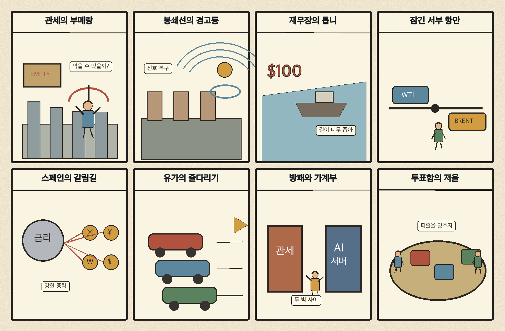
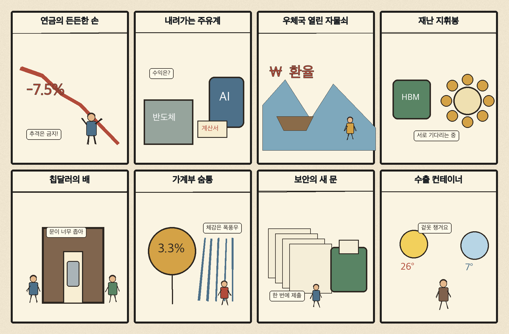

01
마이크론 · 601.25→646.95달러 · +7.60%
내용요약 메모리·AI 기술주 전반의 강한 반등 속 전일 종가 대비 7.60% 상승했습니다.
예상여파 국내 메모리 대형주와 HBM 공급망의 월요일 투자심리를 지지할 수 있습니다.
MORNING_BRIEFING_20261128
작성 시각: 2026-11-28 06:34 KST · 직전 미국 정규장과 2026-11-28 KST 당일 공개 기사 기준
미국 11월 27일 정규장은 AI·기술주 반등으로 다우 +1.18%, S&P 500 +1.60%, 나스닥 +2.31%로 마감했습니다. 국내 시장은 토요일 휴장이라 즉시 거래 신호는 아니며, 월요일에는 반도체·성장주 투자심리 회복과 주말 중동·관세 뉴스가 함께 반영될 가능성이 큽니다.
| 지수 | 종가 | 등락률 | 한국 증시 시사점 |
|---|---|---|---|
| 다우존스 | 50,774.94 | +1.18% | 경기민감주 위험선호 회복 |
| S&P 500 | 7,297.49 | +1.60% | 대형주 동반 반등 |
| 나스닥 종합 | 24,129.50 | +2.31% | AI·반도체 투자심리 개선 |
AI·기술주가 반등하며 위험선호가 회복됐습니다.
금요일 4,915.68로 급반등해 월요일 추격 부담도 커졌습니다.
중국 내 블랙웰 칩 발견으로 유통망 검증이 강화될 수 있습니다.
해상봉쇄 긴장은 남았지만 브렌트유는 당일 1.2% 하락했습니다.
11월 27일 보고서는 미국 휴장과 보정 표본 부족으로 공식 추천을 내지 않았습니다. 사후 급등을 보고 추천 기록을 추가하지 않습니다.
| 시장 | 종가 | 등락률 | 기준 |
|---|---|---|---|
| KOSPI | 4,915.68 | +4.34% | 11월 27일 · 시가 대비 +3.95% |
| KOSDAQ | 708.99 | +8.13% | 11월 27일 · 시가 대비 +6.69% |
| 다우존스 | 50,774.94 | +1.18% | 미국 11월 27일 정규장 |
| S&P 500 | 7,297.49 | +1.60% | 미국 11월 27일 정규장 |
| 나스닥 종합 | 24,129.50 | +2.31% | 미국 11월 27일 정규장 |
미국 기술주 반등과 메모리·AI칩 종목 급등이 투자심리를 지지합니다.
나스닥 반등은 인터넷·소프트웨어·로봇의 할인율 부담을 완화합니다.
브렌트유가 중동 긴장에도 1.2% 하락해 단기 가격 모멘텀이 약해졌습니다.
금요일 +8.13% 급등 뒤 월요일 시가 추격은 손익비가 불리할 수 있습니다.
내용요약 메모리·AI 기술주 전반의 강한 반등 속 전일 종가 대비 7.60% 상승했습니다.
예상여파 국내 메모리 대형주와 HBM 공급망의 월요일 투자심리를 지지할 수 있습니다.
내용요약 AI 네트워크·반도체주 매수세가 유입되며 전일 종가 대비 7.34% 상승했습니다.
예상여파 데이터센터 통신칩과 네트워크 장비 공급망에 긍정적 비교 신호입니다.
내용요약 반도체 업종 동반 반등으로 전일 종가 대비 6.29% 상승했습니다.
예상여파 모바일·엣지 AI 관련 반도체의 위험선호 회복을 보여줍니다.
내용요약 AI·반도체 성장주 반등 속 전일 종가 대비 6.22% 상승했습니다.
예상여파 설계자산과 저전력 컴퓨팅 관련 종목의 밸류에이션 회복 기대를 높입니다.
내용요약 성장주 위험선호가 살아나며 전일 종가 대비 8.21% 상승했습니다.
예상여파 우주·방산 성장주의 변동성이 확대될 수 있어 국내 연관주의 추격은 경계해야 합니다.
오늘은 토요일로 한국 증시가 휴장합니다. 금요일 KOSPI +4.34%, KOSDAQ +8.13%에 이어 미국 기술주까지 반등해 월요일 성장주 심리는 우호적이지만, 이미 국내 지수가 크게 오른 만큼 시가 갭 상승 추격은 손익비가 나빠질 수 있습니다. 주말 동안 중동 해상 긴장, 미국 관세, AI칩 수출통제의 추가 전개를 먼저 확인해야 합니다.
오늘은 추천 없음 — 현금 관망
토요일 국내 시장 휴장으로 당일 시가 진입 기준을 설정할 수 없습니다. 또한 금요일 급반등 뒤 월요일 갭 위험을 반영한 30건 이상 보정 표본, 종합점수 75점, 상승확률 60%, 예상 손익비 1.5를 동시에 검증할 수 없습니다.
관심 연결종목 대형 반도체·HBM·AI 소프트웨어는 미국 기술주 반등의 관찰군일 뿐 매수 추천이 아닙니다. 월요일 시가 급등 종목의 추격매수를 금지합니다.
해상봉쇄 충돌이 유가·운임으로 번지는지 확인합니다.
여당 내부 이견이 실제 정책 속도를 바꾸는지 봅니다.
중국 내 최첨단칩 발견 뒤 추가 제재 여부를 점검합니다.
금요일 국내 급등과 미국 기술주 반등이 겹친 시가 과열을 경계합니다.
핵심 요약: 미국 기술주는 강하게 반등했지만 AI 산업의 핵심 변수는 칩 유통망 통제, 기업 간 기밀 분쟁, 군·공공 보안입니다. 서울의 AI 도시 경쟁력과 의료 현장 적용은 장기 성장의 긍정 신호입니다.
내용요약 오픈AI가 애플의 기밀탈취 주장에 맞서 반소를 제기하며 폐쇄적인 조직문화와 인재 이동 문제를 비판했습니다.
예상여파 AI 인재와 영업비밀을 둘러싼 법적 분쟁이 커지면 채용·협업 계약과 내부 보안 기준이 한층 엄격해질 수 있습니다.
내용요약 중국 내 연계 시설에서 엔비디아 블랙웰 계열 최첨단 칩이 발견됐다는 보도입니다.
예상여파 대중 수출통제의 우회 경로 단속이 강화되며 AI칩 판매사의 고객확인과 유통망 관리 비용이 늘어날 수 있습니다.
내용요약 미 공군의 방공레이더 지휘통제 핵심 시스템이 해킹돼 군사기밀 유출 우려가 제기됐습니다.
예상여파 국방·공공 클라우드와 공급망 보안 투자가 확대되는 동시에 네트워크 분리와 접근통제가 강화될 가능성이 큽니다.
내용요약 AI 시대 미래준비 도시 평가에서 샌프란시스코가 1위, 서울이 8위로 상승했습니다.
예상여파 서울의 인재·인프라 경쟁력이 부각되지만 창업 생태계와 데이터 활용 규제의 실행력이 다음 순위 상승을 좌우할 전망입니다.
내용요약 진단을 넘어 방사선 피폭 문제를 줄이려는 의료 AI 기술의 임상 적용이 소개됐습니다.
예상여파 영상 품질과 안전성을 함께 개선하면 병원 도입이 늘 수 있지만 임상 검증과 규제 승인 데이터가 핵심입니다.
핵심 요약: 미국 관세의 정치적 부담, 이란 해상봉쇄 충돌, 독일의 재무장이 세계 경제와 안보를 동시에 흔들고 있습니다. 미국 서부 침수와 스페인 총선은 인프라·유럽 정책의 주말 변수입니다.
내용요약 미국 선거 패배 뒤에도 트럼프 행정부가 관세를 이어가자 여당 내부에서도 불만이 커지고 있다는 보도입니다.
예상여파 관세 정책의 정치적 지속 가능성이 흔들리면 교역국 협상과 기업의 가격·공급망 전략 변동성이 높아질 수 있습니다.
내용요약 미군 중부사령부가 이란의 해상봉쇄 돌파를 시도한 상선을 무력화했다고 밝혔습니다.
예상여파 호르무즈 주변 긴장이 해상보험료와 운임을 자극할 수 있으나 유가는 당일 브렌트유 기준 1.2% 하락했습니다.
내용요약 독일 의회가 사상 최대 규모의 내년 국방 예산을 확정했습니다.
예상여파 유럽의 재무장 흐름이 방산·항공우주 수요를 지지하는 한편 재정지출 우선순위 논쟁을 키울 수 있습니다.
내용요약 미국 서부 해안이 높은 해수면과 폭풍 영향으로 침수돼 철도와 부두 운영에 차질을 빚었습니다.
예상여파 항만·철도 복구 지연은 연휴 물류와 보험 손실을 늘리고 기후 적응 인프라 투자를 촉진할 수 있습니다.
내용요약 스페인 총선을 하루 앞두고 현 집권세력의 연장과 보수 야당의 정권교체가 맞붙고 있습니다.
예상여파 결과에 따라 유럽연합 재정·에너지·이민 정책에서 스페인의 협상 방향이 달라질 수 있습니다.

핵심 요약: 연금 지원 확대와 유가 하락은 가계 부담을 덜어주는 반면 공공서비스 해킹은 보안 투자의 시급성을 드러냈습니다. 반도체 수출의 위상 확대와 서울 재난지휘 개편은 산업·행정 실행력을 확인할 사안입니다.
내용요약 내년 저소득층 국민연금 보험료 지원 대상이 98만5천명으로 늘어 2년 전보다 약 다섯 배 확대됩니다.
예상여파 사각지대 가입자의 노후소득 기반을 넓히는 반면 재정 지속성과 실제 납부 유지율 관리가 중요해집니다.
내용요약 전국 주유소 기름값이 28주 연속 하락하고 서울도 2주 연속 리터당 평균 1천800원대를 기록했습니다.
예상여파 가계 교통비와 운송 원가 부담을 낮추지만 중동 공급위험이 커지면 하락 흐름이 되돌려질 수 있습니다.
내용요약 인터넷우체국 해킹으로 하루치 이용자 11만3천여명의 개인정보가 유출됐습니다.
예상여파 공공서비스 인증·접근통제 점검과 피해자 보호조치가 확대되고 추가 유출 여부 확인이 중요해집니다.
내용요약 서울시가 재난 대응 2단계부터 소방본부가 현장을 지휘하도록 체계를 개편합니다.
예상여파 지휘 일원화로 대응 속도가 개선될 수 있지만 기관 간 권한·정보 공유 절차를 실제 훈련으로 검증해야 합니다.
내용요약 한국의 반도체 수출액이 석유·가스 수출을 처음 추월했다는 분석입니다.
예상여파 AI칩 수요가 무역수지를 지지하는 반면 특정 품목과 대외 규제에 대한 수출 의존도도 함께 커질 수 있습니다.
